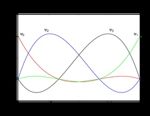
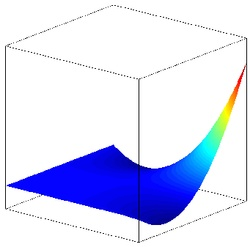

- blockBlock IDs for the coordinate systems
C++ Type:std::vector<SubdomainName>
Controllable:No
Description:Block IDs for the coordinate systems
- boundary_restricted_elem_integrity_checkTrueSet to false to disable checking of boundary restricted elemental object variable dependencies, e.g. are the variable dependencies defined on the selected boundaries?
Default:True
C++ Type:bool
Controllable:No
Description:Set to false to disable checking of boundary restricted elemental object variable dependencies, e.g. are the variable dependencies defined on the selected boundaries?
- boundary_restricted_node_integrity_checkTrueSet to false to disable checking of boundary restricted nodal object variable dependencies, e.g. are the variable dependencies defined on the selected boundaries?
Default:True
C++ Type:bool
Controllable:No
Description:Set to false to disable checking of boundary restricted nodal object variable dependencies, e.g. are the variable dependencies defined on the selected boundaries?
- coord_typeXYZType of the coordinate system per block param
Default:XYZ
C++ Type:MultiMooseEnum
Controllable:No
Description:Type of the coordinate system per block param
- error_on_jacobian_nonzero_reallocationFalseThis causes PETSc to error if it had to reallocate memory in the Jacobian matrix due to not having enough nonzeros
Default:False
C++ Type:bool
Controllable:No
Description:This causes PETSc to error if it had to reallocate memory in the Jacobian matrix due to not having enough nonzeros
- extra_tag_matricesExtra matrices to add to the system that can be filled by objects which compute residuals and Jacobians (Kernels, BCs, etc.) by setting tags on them.
C++ Type:std::vector<TagName>
Controllable:No
Description:Extra matrices to add to the system that can be filled by objects which compute residuals and Jacobians (Kernels, BCs, etc.) by setting tags on them.
- extra_tag_solutionsExtra solution vectors to add to the system that can be used by objects for coupling variable values stored in them.
C++ Type:std::vector<TagName>
Controllable:No
Description:Extra solution vectors to add to the system that can be used by objects for coupling variable values stored in them.
- extra_tag_vectorsExtra vectors to add to the system that can be filled by objects which compute residuals and Jacobians (Kernels, BCs, etc.) by setting tags on them.
C++ Type:std::vector<TagName>
Controllable:No
Description:Extra vectors to add to the system that can be filled by objects which compute residuals and Jacobians (Kernels, BCs, etc.) by setting tags on them.
- force_restartFalseEXPERIMENTAL: If true, a sub_app may use a restart file instead of using of using the master backup file
Default:False
C++ Type:bool
Controllable:No
Description:EXPERIMENTAL: If true, a sub_app may use a restart file instead of using of using the master backup file
- fv_bcs_integrity_checkTrueSet to false to disable checking of overlapping Dirichlet and Flux BCs and/or multiple DirichletBCs per sideset
Default:True
C++ Type:bool
Controllable:No
Description:Set to false to disable checking of overlapping Dirichlet and Flux BCs and/or multiple DirichletBCs per sideset
- ignore_zeros_in_jacobianFalseDo not explicitly store zero values in the Jacobian matrix if true
Default:False
C++ Type:bool
Controllable:No
Description:Do not explicitly store zero values in the Jacobian matrix if true
- kernel_coverage_checkTrueSet to false to disable kernel->subdomain coverage check
Default:True
C++ Type:bool
Controllable:No
Description:Set to false to disable kernel->subdomain coverage check
- material_coverage_checkTrueSet to false to disable material->subdomain coverage check
Default:True
C++ Type:bool
Controllable:No
Description:Set to false to disable material->subdomain coverage check
- material_dependency_checkTrueSet to false to disable material dependency check
Default:True
C++ Type:bool
Controllable:No
Description:Set to false to disable material dependency check
- near_null_space_dimension0The dimension of the near nullspace
Default:0
C++ Type:unsigned int
Controllable:No
Description:The dimension of the near nullspace
- null_space_dimension0The dimension of the nullspace
Default:0
C++ Type:unsigned int
Controllable:No
Description:The dimension of the nullspace
- parallel_barrier_messagingFalseDisplays messaging from parallel barrier notifications when executing or transferring to/from Multiapps (default: false)
Default:False
C++ Type:bool
Controllable:No
Description:Displays messaging from parallel barrier notifications when executing or transferring to/from Multiapps (default: false)
- previous_nl_solution_requiredFalseTrue to indicate that this calculation requires a solution vector for storing the prvious nonlinear iteration.
Default:False
C++ Type:bool
Controllable:No
Description:True to indicate that this calculation requires a solution vector for storing the prvious nonlinear iteration.
- restart_file_baseFile base name used for restart (e.g.
/ or /LATEST to grab the latest file available) C++ Type:FileNameNoExtension
Controllable:No
Description:File base name used for restart (e.g.
/ or /LATEST to grab the latest file available) - rz_coord_axisYThe rotation axis (X | Y) for axisymetric coordinates
Default:Y
C++ Type:MooseEnum
Controllable:No
Description:The rotation axis (X | Y) for axisymetric coordinates
- skip_additional_restart_dataFalseTrue to skip additional data in equation system for restart. It is useful for starting a transient calculation with a steady-state solution
Default:False
C++ Type:bool
Controllable:No
Description:True to skip additional data in equation system for restart. It is useful for starting a transient calculation with a steady-state solution
- skip_nl_system_checkFalseTrue to skip the NonlinearSystem check for work to do (e.g. Make sure that there are variables to solve for).
Default:False
C++ Type:bool
Controllable:No
Description:True to skip the NonlinearSystem check for work to do (e.g. Make sure that there are variables to solve for).
- solveTrueWhether or not to actually solve the Nonlinear system. This is handy in the case that all you want to do is execute AuxKernels, Transfers, etc. without actually solving anything
Default:True
C++ Type:bool
Controllable:Yes
Description:Whether or not to actually solve the Nonlinear system. This is handy in the case that all you want to do is execute AuxKernels, Transfers, etc. without actually solving anything
- transpose_null_space_dimension0The dimension of the transpose nullspace
Default:0
C++ Type:unsigned int
Controllable:No
Description:The dimension of the transpose nullspace
- use_nonlinearTrueDetermines whether to use a Nonlinear vs a Eigenvalue system (Automatically determined based on executioner)
Default:True
C++ Type:bool
Controllable:No
Description:Determines whether to use a Nonlinear vs a Eigenvalue system (Automatically determined based on executioner)
- verbose_multiappsFalseSet to True to enable verbose screen printing related to MultiApps
Default:False
C++ Type:bool
Controllable:No
Description:Set to True to enable verbose screen printing related to MultiApps
FEProblemBase
The FEProblemBase class is an intermediate base class containing all of the common logic for running the various MOOSE simulations. MOOSE has two built-in types of problems FEProblem for solving "normal" physics problems and EigenProblem for solving Eigenvalue problems. Additionally, MOOSE contains an ExternalProblem problem useful for creating "MOOSE-wrapped Apps".
Convenience Zeros
One of the advantages of the MOOSE framework is the ease at building up Multiphysics simulations. Coupling is a first-class feature and filling out residuals, or material properties with coupling is very natural. When coupling is optional, it is often handy to have access to valid data structures that may be used in-place of the actual coupled variables. This makes it possible to avoid branch statements inside of your residual statements and other computationally intensive areas of code. One of the ways MOOSE makes this possible is by making several different types of "zero" variables available. The following statements illustrate how optional coupling may be implemented with these zeros.
// In the constructor initialization list of a Kernel
_velocity_vector(isParamValid("velocity_vector") ? coupledGradient("velocity_vector") : _grad_zero)
// The residual statement
return _test[_i][_qp] * (_velocity_vector[_qp] * _grad_u[_qp]);
Selective Reinit
The system automatically determines which variables should be made available for use on the current element ("reinit"-ed). Each variable is tracked on calls through the coupling interface. Variables that are not needed are simply not prepared. This can save significant amounts of time on systems that have several active variables.
Finite Element Concepts
Shape Functions
While the weak form is essentially what you need for adding physics to MOOSE, in traditional finite element software more work is necessary.
We need to discretize our weak form and select a set of simple "basis functions" amenable for manipulation by a computer.

Example of linear Lagrange shape function associated with single node on triangular mesh

1D linear Lagrange shape functions
Our discretized expansion of u takes on the following form:
The here are called "basis functions"
These form the basis for the "trial function",
Analogous to the we used earlier
The gradient of can be expanded similarly:
In the Galerkin finite element method, the same basis functions are used for both the trial and test functions:
Substituting these expansions back into our weak form, we get:
The left-hand side of the equation above is what we generally refer to as the component of our "Residual Vector" and write as .
Shape Functions are the functions that get multiplied by coefficients and summed to form the solution.
Individual shape functions are restrictions of the global basis functions to individual elements.
They are analogous to the functions from polynomial fitting (in fact, you can use those as shape functions).
Typical shape function families: Lagrange, Hermite, Hierarchic, Monomial, Clough-Toucher - MOOSE has support for all of these.
Lagrange shape functions are the most common. - They are interpolary at the nodes, i.e., the coefficients correspond to the values of the functions at the nodes.
Example 1D Shape Functions

Linear Lagrange

Quadratic Lagrange

Cubic Lagrange

Cubic Hermite
2D Lagrange Shape Functions
Example bi-quadratic basis functions defined on the Quad9 element:
is associated to a "corner" node, it is zero on the opposite edges.
is associated to a "mid-edge" node, it is zero on all other edges.
is associated to the "center" node, it is symmetric and on the element.



Numerical Integration
The only remaining non-discretized parts of the weak form are the integrals.
We split the domain integral into a sum of integrals over elements:
Through a change of variables, the element integrals are mapped to integrals over the "reference" elements .
is the Jacobian of the map from the physical element to the reference element.
To approximate the reference element integrals numerically, we use quadrature (typically "Gaussian Quadrature"):
is the spatial location of the th quadrature point and is its associated weight.
MOOSE handles multiplication by the Jacobian and the weight automatically, thus your
Kernelis only responsible for computing the part of the integrand.Under certain common situations, the quadrature approximation is exact! - For example, in 1 dimension, Gaussian Quadrature can exactly integrate polynomials of order with quadrature points.
Note that sampling at the quadrature points yields:
And our weak form becomes:
The second sum is over boundary faces, .
MOOSE
Kernelsmust provide each of the terms in square brackets (evaluated at or as necessary).
A normal (default) Problem object that contains a single NonlinearSystem and a single AuxiliarySystem object.
Input Parameters
- control_tagsAdds user-defined labels for accessing object parameters via control logic.
C++ Type:std::vector<std::string>
Controllable:No
Description:Adds user-defined labels for accessing object parameters via control logic.
- default_ghostingFalseWhether or not to use libMesh's default amount of algebraic and geometric ghosting
Default:False
C++ Type:bool
Controllable:No
Description:Whether or not to use libMesh's default amount of algebraic and geometric ghosting
- enableTrueSet the enabled status of the MooseObject.
Default:True
C++ Type:bool
Controllable:No
Description:Set the enabled status of the MooseObject.